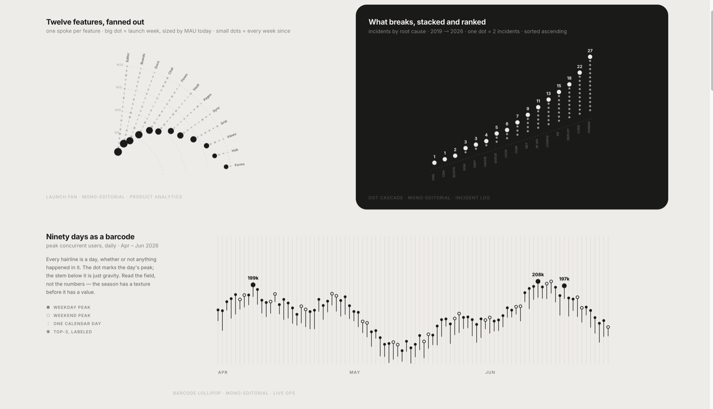
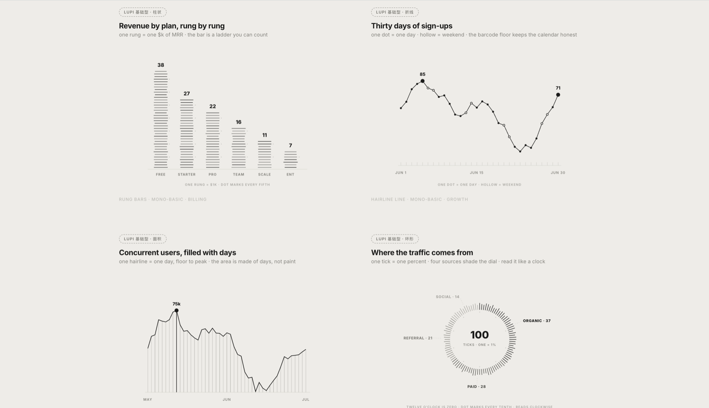
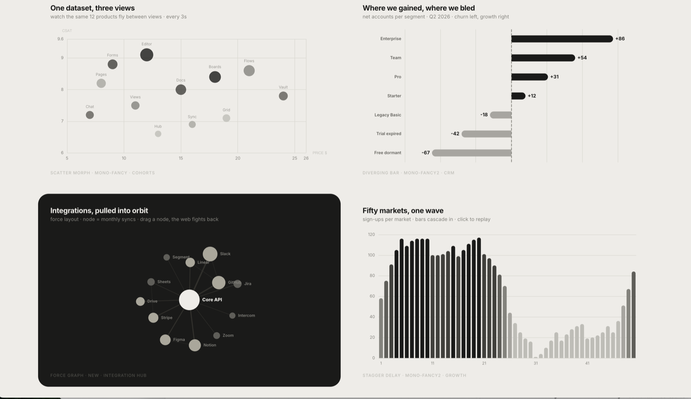

三册内容

Vol. 01
01
63 张图型 · 三大风格 · 12 套报告模板
第 一册 · 使用者视角
图表全景与场景选型
63 张图型、三大风格体系、12 套报告模板、四套色彩系统。 从数据形状到图表选型决策树，告诉你什么场景该用什么图。
核心内容
- Lupi / Basics / Glance 三大风格对比
- 63 张图型逐一解析（含数据形状与场景）
- 四套色彩系统与自动选色逻辑
- 15 个典型场景选型速查表
- 带实际预览图的图示说明

Vol. 02
02
五层架构 · 生产流水线 · 质量保障体系
第 二册 · 生产者视角
生产方法论拆解
从 token 系统到模板工程，从选型决策到质量保障。 五层架构、图型生产流水线、8 类自动化验证——完整的生产体系拆解。
核心内容
- 五层生产架构全景图
- 视觉 token 设计哲学（颜色/字体/动效）
- 图型生产流水线五步走
- 主力/后备护栏机制设计
- validate.mjs 质量保障体系

Vol. 03
03
创作者背景 · 演进路径 · 能力图谱
第 三册 · 创造者视角
从 0 到 1 的背景研究
创作者是谁？他怎么做出来的？需要哪些知识、技能和经验？ 从 Git 提交历史到设计哲学，还原一个非程序员的 AI 产品路径。
核心内容
- 创作者背景与身份核实
- Git 提交历史还原的演进路径
- 四重知识积累来源
- 三层能力图谱（领域/设计/AI）
- 给想做类似事情的人的五步路线
关于这套研究
Lieflat Charts 是一个非常特别的开源项目。它不是一个传统的图表库，而是一套"给 AI Agent 读的设计法典"——把数据可视化领域的品味、规则和工作方法，编码成 AI 可以执行的 Skill 格式。
这三册报告从三个不同的视角切入：第一册站在使用者角度，告诉你它能做什么、怎么用； 第二册站在生产者角度，拆解它内部的设计系统和工程架构； 第三册站在创造者角度，追溯它是怎么被做出来的、需要什么样的积累。
三册独立成篇，但按顺序阅读能获得最完整的理解。
研究对象
- lieflat-charts（GitHub: larashero3-dotcom）
- ⭐ 5.8k+ Stars
- 63 张图表模板 + 12 套报告模板
- Agent Skills 格式 / moxt.ai 平台
资料来源
- 项目源码与 Git 提交历史
- SKILL.md 与 catalog 文档
- 创作者公开动态与自述
- 验证脚本与自动化测试